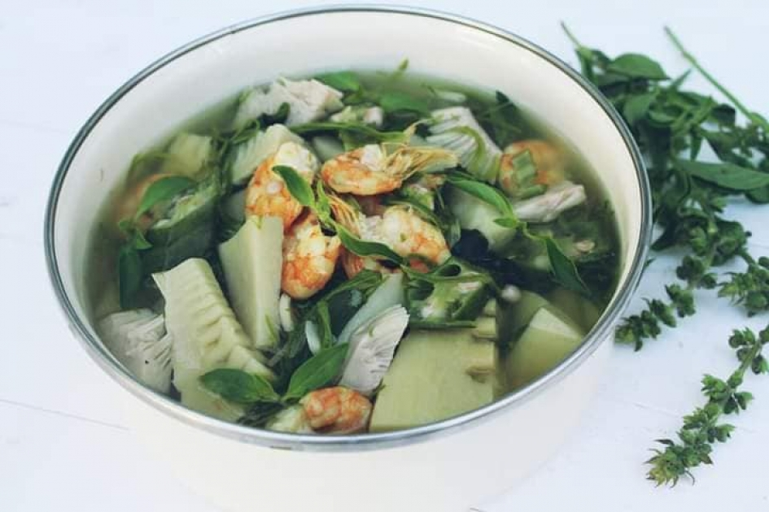

Meals are served in family groups sometimes including friends or neighbors. A typical Karen meal includes a large container of rice accompanied by smaller bowls of meat or fish, vegetables, chilies, fermented fish paste, and other foods and spices. Common vegetables consist of squash, bamboo, cucumbers, mushrooms, and eggplants. The fish paste is a famous dish among the Karen known as “nya u” or in Burmese “ngape.” It is a strong-tasting dish of fermented fish pounded into a fish paste, usually served with rice and vegetables for added flavor. Meals are often flavored with chilies and added spices like turmeric, ginger, cardamom, tamarind, lime juice, and garlic.
Traditionally, the Karen people lived in wooded areas, and rarely visited nearby towns. In stead of buying food at the town market, they foraged in the forest where there was often plenty of bamboo especially during the monsoon season, bamboo shoots have become the primary and essential ingredient of the talabaw soup. The Karen traditionally used the soup to supplement rice, which was not cheaply available to them, consuming a large amount of soup with a small amount of rice in order to conserve the valuable rice. Talabaw is one of the most well-known soups in Myanmar, and widely considered to be the essential dish of Karen cuisine.
|
 |
Talapaw
|
Facebook: Myo Myat